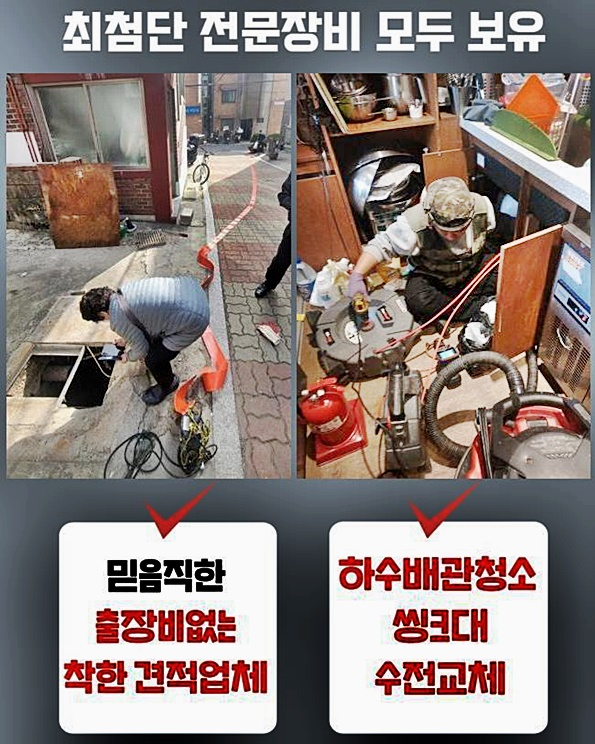
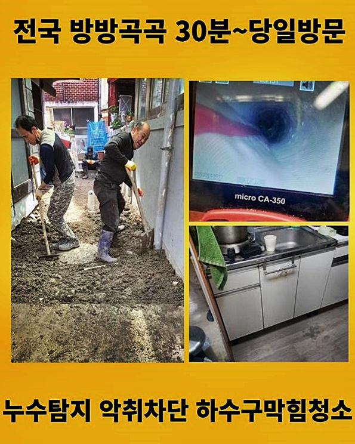
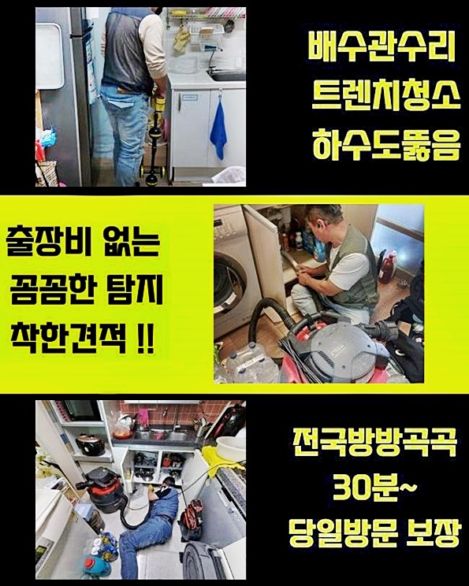
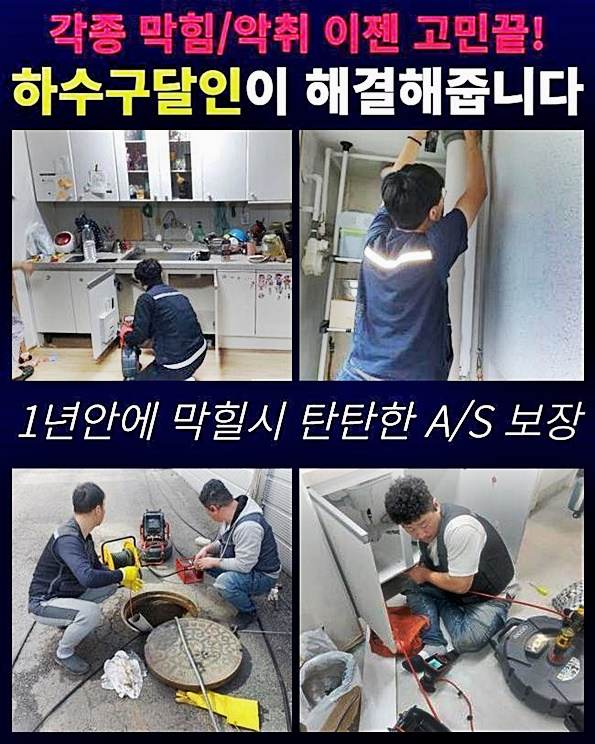
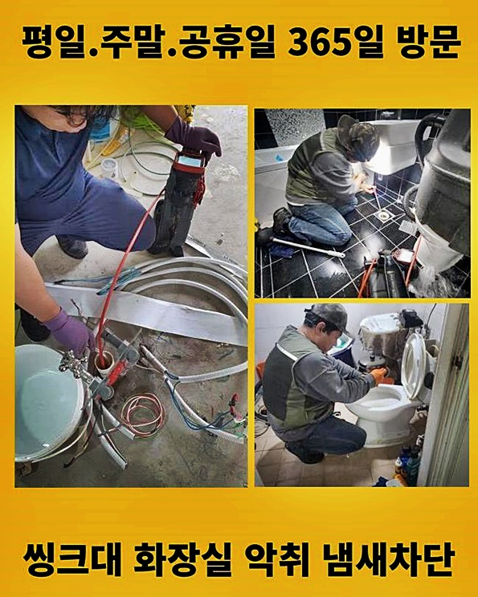
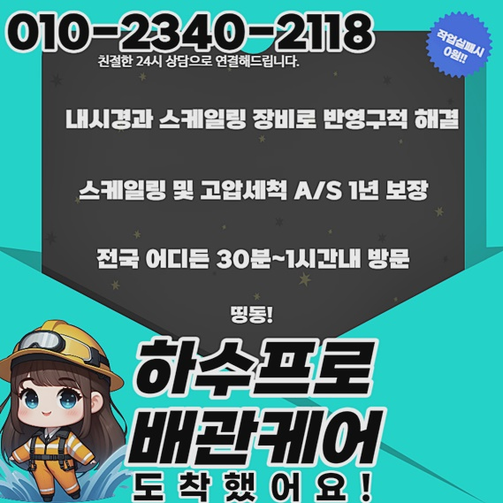

🏠 용산 한강로2가싱크대배수구막힘 원효로1가 맨홀막힘 설비하는곳
고양 싱크대막힘 전문 시공 후기

📋 작업 개요
- 위치: 고양
- 서비스 유형: 싱크대막힘, 하수구막힘, 배관막힘, 맨홀막힘, 누수수리, 역류해결, 뚫는업체, 배관청소, 고압세척, 설비공사, 배관보수
- 작업 일시: 2024. 7. 8. 12:03
- 업체명: 하수구수사대 (010-5615-2118)
🔍 문제 상황
용산 한강로2가싱크대배수구막힘 원효로1가 맨홀막힘 설비하는곳
가정 내의 배수구가 제 역할을 못하는 동기를 알아보면 개수대에서 역류증상이 일어나기도 하며 화장실에서의 생활이 적합하게 실행되지 않기에 문제가 생기는 경우도 있답니다
해당 증세는 뜨거운 물에도 녹아내리지 않는 찌꺼기들이 흘러들어갔거나 생리대나 플라스틱 용품들을 포함해 각종 생활쓰레기들이 계속적으로 누적되어 보일 여지도 많으나 건축하는 과정에서의 탈에 의하여 발발하는 장소도 꽤 있어요
이때는 필로티구조의 빌라에서 일찌감치 배관공사를 이행하던 작업 중간에 급한 문의가 들어왔답니다
집 안의 다양한 공간에서 물이 안내려가고 건물 내의 다른 집에서도 역류가 동시적으로 일어난다는 소식을 접하고 때마침 다음 계획이 안 잡힌 상황이라서 즉각적으로 출동하였답니다
가정 내의 가지 파이프에서 생겨난 정체가 아니라 건물 중앙 배관의 정체문제는 고압 물청소를 활용한 잔재 소멸이 효능이 큰 해결책이랍니다
그리하여 이러한 건물을 알맞게 소제하는데 마땅한 세척기계를 소지한 다음 출장을 나갔지요
저희와 같이 기기 일체를 완벽히 세팅하지 않은 전문가들은 고객님의 댁에 방문하여 일이 어설프게 진행될 여지가 있고 뚫음이 온전하게 나오지 않을 여지도 크죠
흡입기를 작동시키거나 배관 전용 파쇄공구로만 고장을 처리하려고 생각한다면 각 세대 내부에 매립된 배수관과는 상이하게 배수관의 둘레가 굵어서 쉽게 해소가 안될 수 있답니다

🔎 원인 분석
💡 전문가 진단: 정밀 진단 장비를 사용하여 슬러지의 고착 여부를 판명하고 타격/세척 작업을 실시했습니다.
눈으로 보이는 부분의 슬러지만 소멸시킨다면 얼마간 물흐름이 목도될 여지는 있겠지만 점차 시간이 지나면서 물막힘이 나와 괴로워지기에 이런 내용을 처리하기 위한 목적으로 수리공을 구할 땐 전문가용 기기 일체를 가지고 있는 팀과 거래하실 것을 강력히 권장해 드려요
의뢰인이 있는 곳에 다다른 뒤에는 우선하여 기계실로 가서 중앙 하수관에 어떤 형태의 장애가 일어난 건지 알아보게 되었답니다
적층된 이물들에 근거한 형태일 수 있지만 커다란 자재들이 수로를 커트하여 임시적으로 일어난 양상일 가망도 있어 전체적인 가변적 포인트를 고려해야 하였답니다
빈틈없이 배수구의 상황을 직시하기 원한다면 내시경 방수카메라가 필수적입니다
저흰 이런 작업 연륜이 넉넉하기에 해당 제반사항에서 발생 가능한 여러 변인을 발견할 수 있는 값비싼 기계들과 고난이도의 시공에서 체득한 능력이 충분하여 이유가 무엇인지 상관없이 속히 검토하여 해결점을 마련하도록 모든 장비를 갖추고 이동하여 사태를 잠재워드리고 있답니다
트러블이 고착화된 부분은 어디쯤인지 꼼꼼히 전용촬영설비로 관측하며 일을 지속했습니다
카메라 화면을 통하여 조사해보니 공용 배관 안쪽은 어마어마한 찌꺼기들과 이물들로 길목이 막혀버려서 물흐름이 어려웠어요
가정 내에서 매일같이 쓰는 계면활성제 베이스의 소모품과 같은 상품에 포함된 요소들과 토사 그뿐만 아니라 찌개 등을 버릴 때 나온 각종 덩어리 등 수백가지 물체들이 엉겨붙어 누적되면 이후 바위처럼 강한 백회덩어리 등으로 바뀔 수가 있어요
이것들을 즉시 없애지 않고 방치해 버린다면 점차 크기가 증가하게 되며 배수길을 막아 공용 하수도에 결함이 터져버리게 되는 거죠

🔧 작업 과정
지난 주에 처리했던 건조물에서는 애완고양이가 용변처리시 활용하는 가루모래를 한 집에서 배관으로 버리는 일로 흡사한 막힘이 목도되기도 했고 타입은 이처럼 내방장소마다 차이가 나죠
정체가 고약한 지점의 파이프의 결합을 분해하고 세정업무를 해나가면 안에 고여있던 액체와 노폐물이 외부로 토출되는 경우가 많아 근처가 더러워질 여지가 있으므로 앞서 넓은 비니루 등으로 방어해야 하죠
주위 보전 시공을 세심하게 이행하고 고착화된 배관 안의 오염물질을 없앨 주비를 하였어요
중앙 배관이 기름하여 중앙에서도 시공이 요망되었기 때문에 탐지기기로 어느 부분까지 시공을 이어나가는 것이 올바른지 결정하는 시간을 가졌습니다
그 부분도 철두철미하게 보호를 속행해서 혹여 부근으로 침전물이 흩어지는 변수를 대처했습니다
홀쏘를 이용하여 청소 가능한 스페이스도 마련하였어요
첫부분부터 중앙 부위까지 쌍방에서 쇄소를 이행하는 임무를 감행하여 안쪽에 고착화된 상당량의 찌꺼기를 없앴답니다
고압청소 과정에서는 파이프 벽면에 끈끈하게 고정되었던 찌꺼기들이 점차적으로 이탈하는 모습이 직시되었어요
이 기계를 가동시킬 때엔 강한 동력으로 말미암아 짧은 시간에 높은 효율을 나타내어 내부에 고착되었던 찌꺼기들을 없애는 건 쉬이 진행할 수 있는 일이었답니다
일거에 총체적인 배관 찌꺼기들을 처리하는 것은 힘겨우니 부위를 나눈 다음 센터에서 배관카메라를 이용하여 이물이 쌓인 위치를 세심하게 관찰한 이후에 집중적인 고압물청소 모드를 작동해 마무리지을 수 있었어요
과도하게 경직된 고형물은 화학약품을 붓는 현장들도 있긴 하지만 본 작업장은 제품 사용을 안하고도 원활하게 해결이 되었어요
작업을 끝낸 뒤 배관카메라를 집어넣어 깨끗하게 배관 클리닝 업무가 실행됐는지 판단하였고 한번에 많은 물을 내리는 검열 또한 시행했습니다
해당 건축물에서는 군데군데 물샘자국이 확인되었는데 유난히 배관 근처에 크고작은 수분이 배어든 것이 확인되었어요
대략적인 구조를 파악해보니 중앙 부근의 하수관이 노후화되어 찢겨 있어서 신제품으로 바꿀 상황이었지만 영조물의 전반에 걸쳐 파이프 정체가 일어나 시공 업무가 많았기에 이것을 처리하는데 많은 시간이 소요됐고 저녁시간이 도래하였기에 차후 업무는 다음주에 찾아가 손보기로 예약한 다음 귀가하였어요


✅ 작업 완료
해당 건물은 관리실 담당자에게 중층 이하 세대원들이 일시적으로 물막힘이 생겼다는 소식이 들어와서 상당히 신속하게 심각함을 인식하고 저희에게 전화 주신 덕택에 큰 무리없이 마무리지을 수 있었는데요
원인 규명이 힘겨운 물막힘 증세나 역류증세로 인해 불편을 겪고 있으시다면 하수관 전문 기술인에게 문의해 처리해보실 것을 권해드려요
저희는 빠른 출장이 영업 방침으로 되어있고 솔직하게 비용적인 부분을 오픈하니 편안하게 전화하셔도 됩니다
걱정은 내려놓고 보수요청을 해주시면 전심으로 수선하여 흡족한 성과로 답례할 것입니다




⚠️ 베란다 누수 및 방수 관리 방법
- ✅ 비가 많이 올 때 창틀 주변이나 아래층 천장에 얼룩이 생기는지 정기적으로 확인해 보세요.
- ✅ 우수관 주변 실리콘 마감이 들뜨거나 깨진 틈새가 있는지 손상 여부를 수시로 체크하세요.
- ✅ 베란다 바닥 타일의 줄눈(메지)이 소실되면 그 틈으로 물이 침투하여 누수가 유발됩니다.
- ✅ 누수 의심 증상 발견 시 방치하면 아래층 손실이 커지므로 즉시 전문가의 진단을 받으십시오.
💡 핵심 정리
- 확실한 장비 작업(내시경 점검 및 샤프트 스케일링)으로 원인을 뿌리 뽑습니다.
- 작업 후 1년 이내에 동일한 부위 재발 시 100% 무상 A/S 서비스를 보장합니다.
- 서울 · 경기 · 인천 전 지역에 24시간 언제든 긴급 출동할 수 있도록 항시 대기 중입니다.
❓ 자주 묻는 질문 (FAQ)
🚨 고양 싱크대막힘 문제로 고민이신가요?
정확한 원인 진단과 확실한 시공으로 재발 없는 해결을 약속드립니다.
24시간 긴급 출동 | 서울 · 경기 · 인천 전지역 | 1년 내 재발 시 무상 A/S